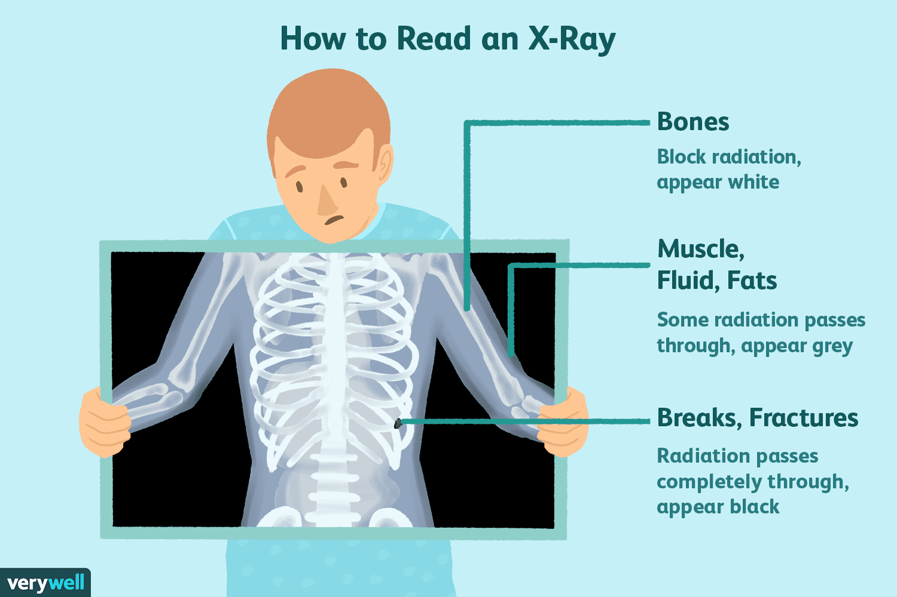

ABOUT X-RAY
X-rays are a form of electromagnetic radiation that use a small dose of ionizing radiation to produce images of the body's internal structures. They are commonly used to diagnose and treat a variety of medical conditions, including bone fractures, tumors, and infections.Here's a more detailed explanation:
What are X-rays?
X-rays are a type of electromagnetic radiation with a shorter wavelength than visible light. They are produced when electrons are accelerated to high speeds and then collide with a target material, typically made of tungsten.How are X-rays used?
X-rays are used to create images of the body's internal structures by passing through the body. The images are created by recording the amount of X-rays that are absorbed or scattered by different tissues.What are X-rays used for?
X-rays can be used to diagnose and treat a variety of medical conditions, including:Bone fractures.
Tumors.
Infections.
Foreign bodies.
Some types of injuries.
Are X-rays safe?
X-rays are generally considered safe, but there is a small risk of radiation exposure. The amount of radiation exposure from an X-ray is typically very small and is less than the amount of radiation that people are exposed to from natural background radiation over several days.Are there any risks involved?
There are some risks associated with X-rays, including:
Radiation exposure.
Potential for allergic reactions to contrast dyes.
Are there any alternatives? Yes, there are other imaging techniques that can be used instead of X-rays, including:CT scans.
MRI scans.
Ultrasound.